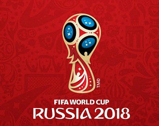
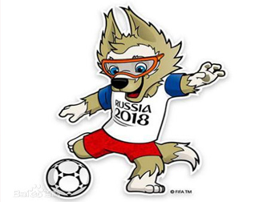
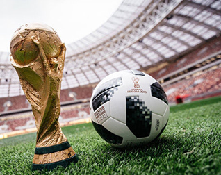

-
赛事会徽
2014年10月29日，当地时间0点，2018年俄罗斯
世界杯会徽揭晓。2018年6月14日至7月15日，世界杯足球赛将在俄罗斯11座城市进行。此前俄罗斯总统普京宣布，世界杯期间国外运动员、裁判、教练及球迷均可免签证入境俄罗斯。
北京时间2014年10月29日晚，国际足联将正式公布2018俄罗斯世界杯的LOGO。布拉特在个人推特上发布了照片，三名俄罗斯宇航员在国际空间站上展示了2018世界杯LOGO，这款LOGO用俄罗斯国旗的蓝色与红色填充起世界杯的形状，另外以金色线条镶嵌。

-
吉祥物
2016年10月21日，国际足联和俄罗斯世界杯组委会在俄罗斯第一频道电视台晚间一档节目中正式揭晓了2018俄罗斯世界杯的吉祥物。罗纳尔多在节目中向观众介绍了将成为俄罗斯世界杯象征的狼。这匹狼眼睛上戴着潜水镜，身穿带有“俄罗斯2018”字样的蓝白色T恤以及一条红色短裤，让人联想到俄罗斯国旗的颜色搭配。国际足联和世界杯组委会在10份候选方案中敲定它作为吉祥物，旨在强调忠诚勇敢的重要性，同时也考虑到这一形象将容易被全球少年儿童接受。

-
比赛用球
2017年11月10日凌晨，国际足联在俄罗斯发布了2018年世界杯比赛用球“电视之星(Telstar) 18”。
新球保持了传统外观，黑色色块占据主要地位，外形上类似于1970年墨西哥世界杯的比赛用球——“Telstar”，同时采用了一些现代化的工艺和科技，其中包括NFC芯片的植入。这是世界杯用球首次植入NFC芯片，目的是让球迷可以通过智能手机连接比赛用球。
这款俄罗斯世界杯用球采用了经典黑白两色，深色梯形装饰由马赛克图案组成，文字则使用了金色。
梅西、齐达内、哈维·阿隆索、皮耶罗、卡卡以及波多尔斯基都参加了新球的发布仪式，皇马和曼联极有可能参与新球的前期测试。这款足球已经发售，新球售价为100欧元。
